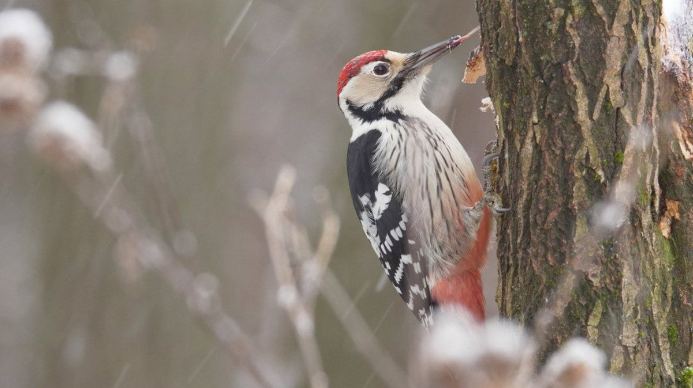

A mérsékelt öv mindkét félgömbön a 23,5° és a 66,5° szélességi fokok között fekszik. A két mérsékelt övnek a 23,5°-tól kb. a 40° közé eső részét szubtrópusoknak is nevezik. Az öv nevét onnan kapta, hogy benne a fő éghajlati elemek középértékei a forró övben, illetve a hideg övben szokásosak közé esnek, mint ahogy földrajzilag is ezek között foglal helyet. Ez a köztes helyzet nem érvényes az egyes éghajlati elemek egyedi (napi) értékeire: általános szabály, hogy a mérsékelt övben ezek évszakossága és eseti ingadozása is jóval nagyobb, mint akár a hideg, akár a forró övben szokás.
| # | First | Last | Handle |
|---|---|---|---|
| 1 | Mark | Otto | @mdo |
| 2 | Jacob | Thornton | @fat |
| 3 | Larry the Bird | ||